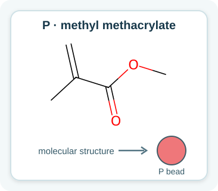
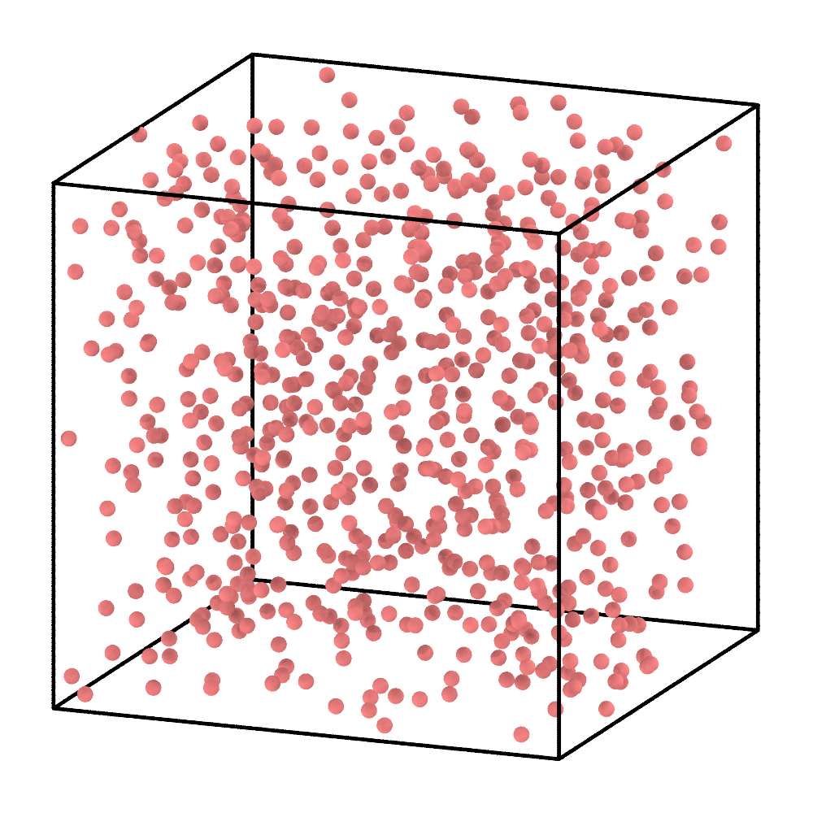
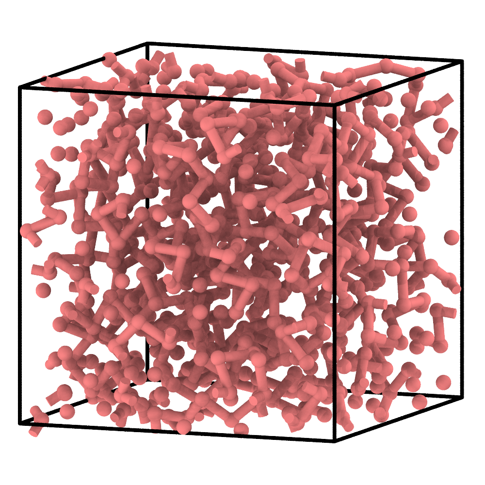
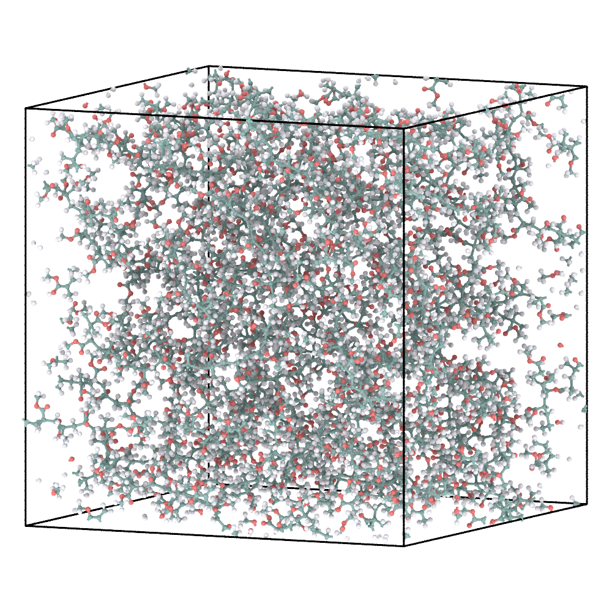
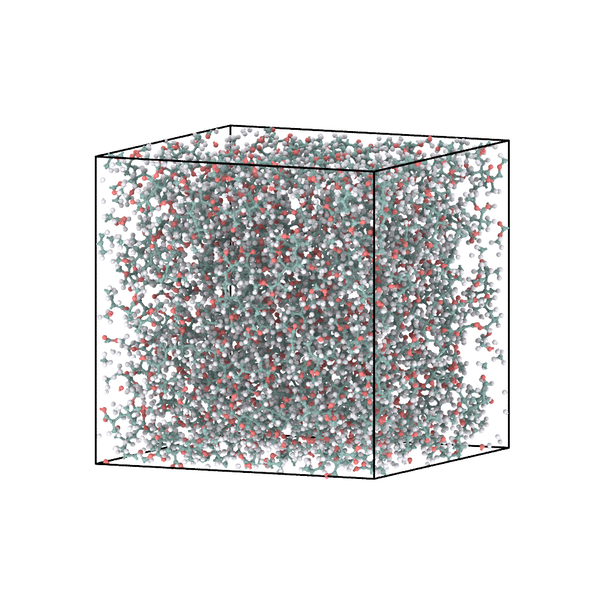

2. Radical PMMA: move an active state during chain growth¶
This example keeps the same four-stage workflow but changes the reaction mechanism: chain growth proceeds from an active CG site.
1. Define the reactant¶
Methyl methacrylate P is the only molecular reactant. Each molecule is
represented by one coral CG bead.
{kind=link}

Methyl methacrylate and its one-bead CG representation.¶
{
"cg_topology_file": "reaction_final.xml",
"reaction_path_file": "reaction_path.txt",
"box_tensor": [10,10,10],
"domd_react_dsl": "v1",
"reactants": [
{
"name": "P",
"smiles": "C=C(C(=O)OC)C",
"N": 600,
"activate": 1,
"max_valence": 2
}
],
"reactions": [
{
"name": "P-P",
"kind": "radical",
"reactants": ["P", "P"],
"smarts": "[C:1]=[C;H0:2].[CH2;$([CH2]=[C;H0]):3]>>[C:1][C:2][CH1:3]",
"prod_idx": [
0
],
"intrinsic_probability": 1.0,
"activation": {
"from": 0,
"to": 1
}
}
]
}
N: 600 creates the starting population, activate: 1 selects one initial
active site, and max_valence: 2 permits an incorporated bead to connect to
two neighbours. The radical rule represents:
P* + P → P—P*
activation: {"from": 0, "to": 1} transfers activity from the growing end to
the newly incorporated monomer. The mapped SMARTS separately defines the
atomistic bond change.
2. Run radical CG polymerization¶
Run this command from the extracted tutorial directory (or replace the paths
with absolute paths). --name identifies the workspace for this example;
02_radical_pmma/cg/ receives the generated initial.xml,
cg_parameters.json, and run_pygamd_polymerization.py.
chemfast prepare_cg --json 02_radical_pmma/config.json --name 02_radical_pmma
Next, switch to 02_radical_pmma/cg/ and run the generated PyGAMD script
with an interpreter that supports PyGAMD:
python run_pygamd_polymerization.py initial.xml cg_parameters.json --gpu=0
Once PyGAMD finishes, 02_radical_pmma/cg/ should contain the matching
reaction_final.xml and reaction_path.txt. Return to the extracted tutorial
directory before using the relative --name in the following command; alternatively,
provide the absolute workspace path to run the CLI from anywhere.
Initial CG monomers |
Polymerized and pre-equilibrated CG configuration |
|---|---|
 |
 |
The active state propagates along an accepted sequence of P-P events.
activate sets the number of initial growth fronts; it does not prescribe a
final chain length.
3. Reconstruct the atomistic model¶
chemfast reconstruct_aa --name 02_radical_pmma
The CLI reads 02_radical_pmma/config.json and the two fixed CG outputs from
02_radical_pmma/cg/, then writes the reconstructed SDF and GROMACS files to
02_radical_pmma/aa/. No CG result filenames need to be passed again.
Final CG configuration |
Energy-minimized AA reconstruction |
|---|---|
 |
ReactionPath replay converts each accepted P-P event into its mapped
atomistic transformation. The final CG configuration supplies the spatial
reference for placing the reconstructed chains.
4. Briefly equilibrate the AA model¶
See AA relaxation for the external GROMACS steps used to
produce EM/EQ coordinates from the reconstructed system.gro.
Energy-minimized AA model |
AA model after the supplied short equilibration |
|---|---|
 |
This short continuation checks the reconstructed coordinates and exported force field. A scientific production run requires a system-specific equilibration protocol.
What to inspect¶
the ReactionPath contains only
P-Pevents;activity moves between participants rather than multiplying;
no CG node exceeds degree two;
atom counts, topology, coordinates, and force-field exports remain consistent.
Next: Cross-linked polyimide.